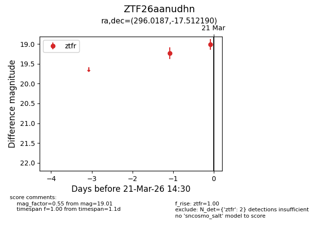
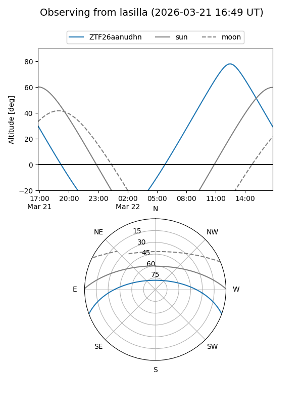
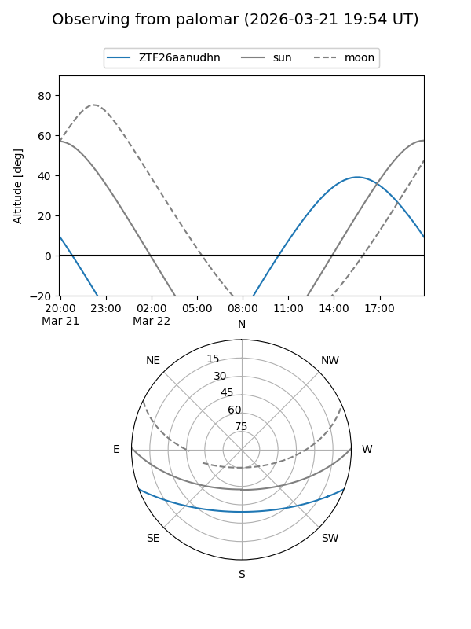
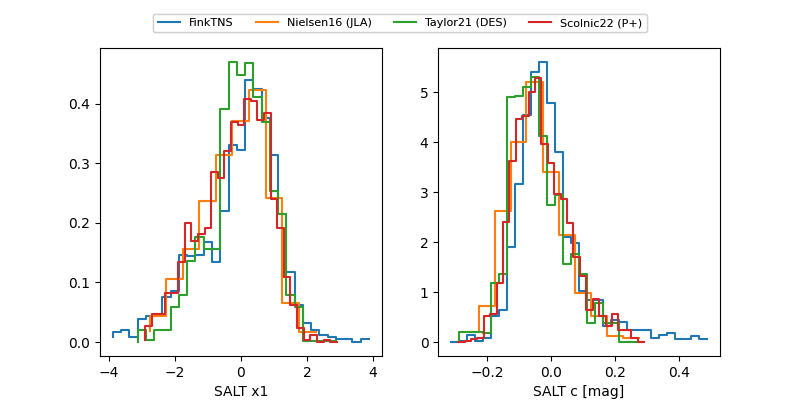

ZTF26aanudhn
Target ZTF26aanudhn at 2026-03-21 14:32
Aliases and brokers:
FINK: link
Lasair: link
ALeRCE: link
alt names
ZTF26aanudhn (ztf,fink_ztf)
Coordinates:
equatorial (ra, dec) = 296.0187,-17.51219
equatorial (HMS+DMS) = 19:44:04.49,-17:30:43.89
galactic (l, b) = (22.6289,-19.29498)
Flags:
Photometry:
last ztfr=19.01
2 ztfr detections
Lightcurve

Visibility


Additional plots
